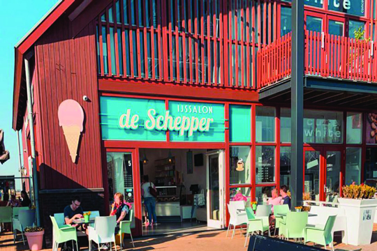

Juliandorp
- Julianadorp is gesticht in 1817 in polder de Koegras.
- De naamgeving was echter pas op 8 oktober 1909.
- Julianadorp heeft een van de schoonste stranden van Nederland.
- Het Loopuytpark is vernoemd naar de stichter van Julianadorp: Pieter Loopuyt Jr.
- De vlag van Julianadorp werd pas officieel erkend in het jaar dat het dorp 100 bestond (2009)
 In het museum kom je alles te weten over de historie van het fort. Rondom Fort Kijkduin hebben bijzondere gebeurtenissen plaatsgevonden die van belang zijn geweest voor de Nederlandse geschiedenis. Ervaar bijvoorbeeld hoe het er aan toe ging bij de Slag bij Groote Keeten en waan je onderdeel van het Engelse leger dat de Bataafse Republiek binnenviel in 1799. Wandel mee met Napoleon en ontdek hoe Fort Kijkduin door de jaren heen is veranderd. Ook de Tweede wereldoorlog komt aan bod.
Aan het eind van het museum dwaal je door de holle beer (verbindingsgang) en kom je in de schietgalerij uit. Buiten is de kruitkamer en via één van de bastions kom je in een lange ondergrondse tunnel terecht. Hier begint de bunkerroute, een kleine wandeling door het prachtige duinlandschap van het fort. De bunkers zijn uit de periode van het interbellum en experimenteel. Je mag overal in om een kijkje te nemen!
In het museum kom je alles te weten over de historie van het fort. Rondom Fort Kijkduin hebben bijzondere gebeurtenissen plaatsgevonden die van belang zijn geweest voor de Nederlandse geschiedenis. Ervaar bijvoorbeeld hoe het er aan toe ging bij de Slag bij Groote Keeten en waan je onderdeel van het Engelse leger dat de Bataafse Republiek binnenviel in 1799. Wandel mee met Napoleon en ontdek hoe Fort Kijkduin door de jaren heen is veranderd. Ook de Tweede wereldoorlog komt aan bod.
Aan het eind van het museum dwaal je door de holle beer (verbindingsgang) en kom je in de schietgalerij uit. Buiten is de kruitkamer en via één van de bastions kom je in een lange ondergrondse tunnel terecht. Hier begint de bunkerroute, een kleine wandeling door het prachtige duinlandschap van het fort. De bunkers zijn uit de periode van het interbellum en experimenteel. Je mag overal in om een kijkje te nemen!
IJssalon de Schepper. Ambachtelijk ijs gemaakt in een open keuken. Deze ijssalon met een geweldige naam geeft voldoende keus. Overigens kun je ook gaan voor een fijne kop koffie.
Mocht je eerst zin hebben in een lekker patatje. Dan kun je bij de buren aankloppen.
t Centrum verse friet. Na een dagje strand even neerploffen met een bakje heerlijke, verse friet? Deze leuke friettent vind je in het centrum van Julianadorp. Parkeerplaats vlak bij en ook een wc. Je kunt lekker buiten loungen op de banken.